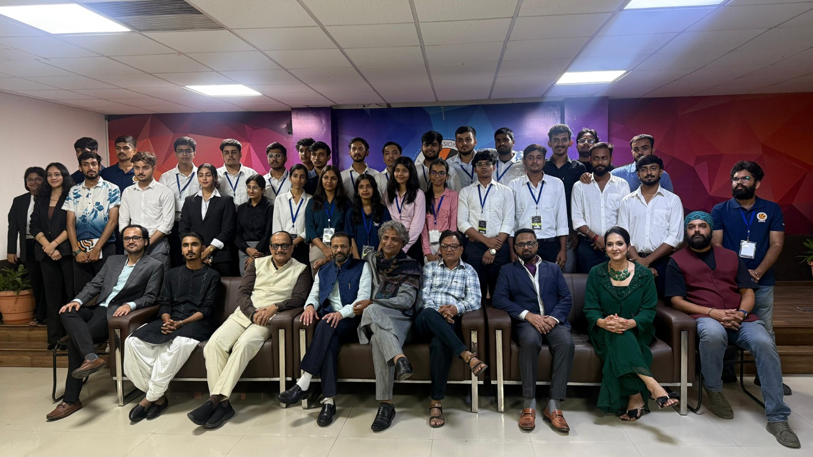
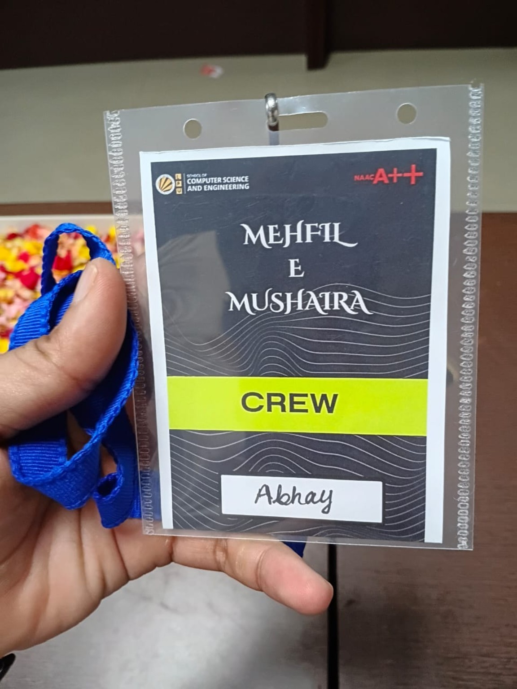

Lovely Professional University • Student Career Committee
Mehfil-E-Mushaira
Organised and supported the university's Mehfil-E-Mushaira, a cultural and literary event organised by the Student Career Committee (SCC) at Lovely Professional University. The event brought together talented poets and created a platform for sharing poetry, creativity and meaningful expression.
Event Role
University Event Organiser
Organisation
Student Career Committee (SCC)
Focus
Event Coordination • Teamwork • Leadership

